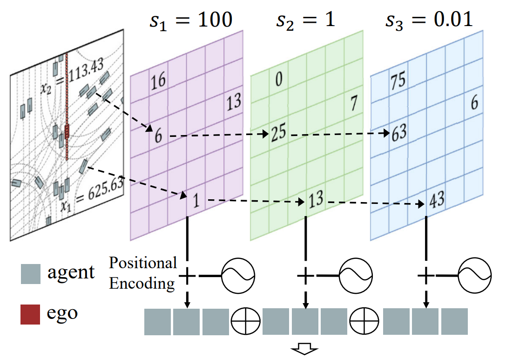
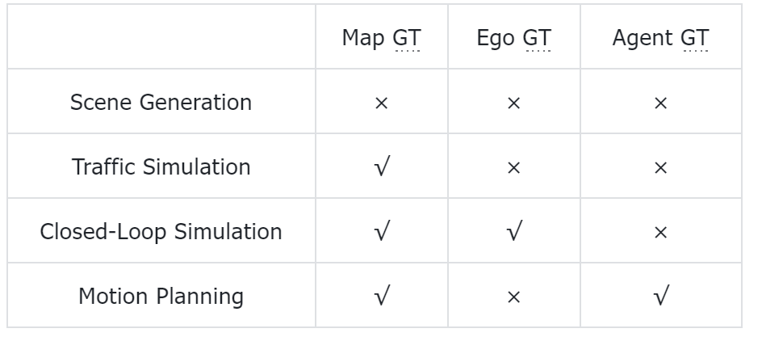
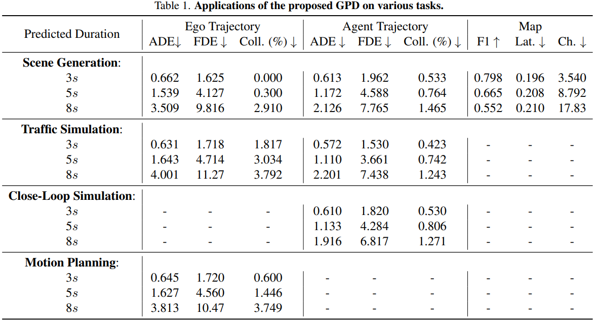
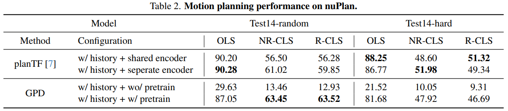
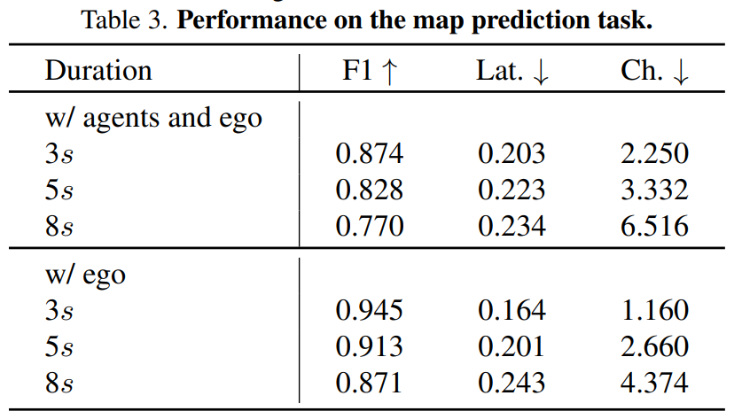
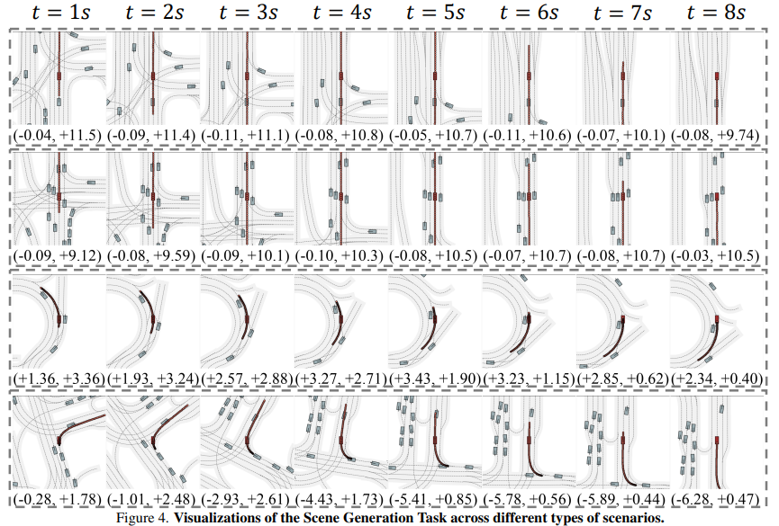
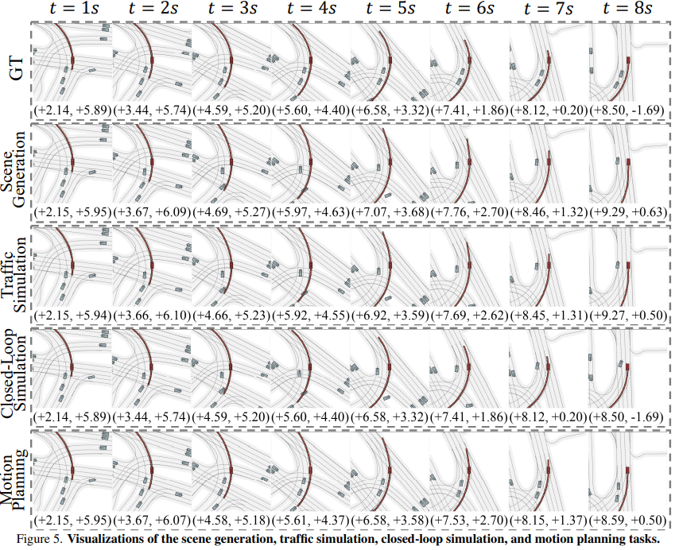

Abstract
Modeling the evolutions of driving scenarios is important for the evaluation and decision-making of autonomous driving systems. Most existing methods focus on one aspect of scene evolution such as map generation, motion prediction, and trajectory planning. In this paper, we propose a unified Generative Pre-training for Driving (GPD) model to accomplish all these tasks altogether without additional finetuning. We represent each scene with ego, agent, and map tokens and formulate autonomous driving as a unified token generation problem. We adopt the autoregressive transformer architecture and use a scene-level attention mask to enable intra-scene bi-directional interactions. For the ego and agent tokens, we propose a hierarchical positional tokenizer to effectively encode both 2D positions and headings. For the map tokens, we train a map vector-quantized autoencoder to efficiently compress ego-centric semantic maps into discrete tokens. We pre-train our GPD on the large-scale nuPlan dataset and conduct extensive experiments to evaluate its effectiveness. With different prompts, our GPD successfully generalizes to various tasks without finetuning, including scene generation, traffic simulation, closed-loop simulation, map prediction, and motion planning.

Given past 2D BEV observations, our pre-trained GPD model can jointly predict future scene evolution and agent movements.
Overview of the GPD Approach

Our model adapts the GPT-like architecture for autonomous driving scenarios with two key innovations: 1) a 2D map scene tokenizer based on VQ-VAE that generates discrete, high-level representations of the 2D BEV map, and 2) a hierarchical quantization agent tokenizer to encode agent information. Using a scene-level mask, the autoregressive transformer predicts future scenes by conditioning on both ground-truth and previously predicted scene tokens during training and inference, respectively.

Illustration of the hierarchical quantization agent tokenizer. We designed a set of thresholds to categorize agent states into distinct ranges, converting continuous information into discrete representations.
Results
Main Results

GPD can perform the four tasks: Scene Generation, Traffic Simulation, Closed-Loop Simulation, and Motion Planning without pre-training.
In our experiments, we provide a fixed 2-second map and agent data as initial information and use different prompt settings. The symbol "√" indicates that the selected ground-truth (GT) will be sent to the model as a prompt, while the remaining values will be generated by GPD.
Below, we present video demos for the other tasks separately, except for Scene Generation, which is featured at the top of the website.
Traffic Simulation Demo
Closed-Loop Simulation Demo
Motion Planning Demo

The specific metrics for the four generation tasks.
nuPlan Motion Planning Challenge

We added only a single decoder layer to decode the ego token to meet the nuPlan challenge requirements. Without relying on complex data augmentation or post-processing techniques, our model achieves performance comparable to PlanTF and even surpasses it in certain metrics.
Map Prediction
Map Prediction Demo

In the map generation experiment, we evaluated the model under two settings: first, providing ground truth for both the agents and the ego vehicle to generate the map; second, providing only the ego ground truth and making all other agents invisible to generate the map.
Visualizations

Figure 4 shows the performance under the Scene Generation setting in complex scenarios. The results demonstrate that even in highly intricate road conditions, the map can be generated smoothly. In two turning scenarios, both the ego vehicle and agents follow a natural trajectory at a relatively steady speed. Similarly, in two straight-driving scenarios, the model effectively captures surrounding agents' actions (e.g., turning, driving, and decelerating) while maintaining a stable forward speed.

Figure 5 illustrates the performance in a more complex intersection-turning scenario across different settings. The quality of map generation is notably satisfactory, and for both agents and the ego vehicle, the model’s performance closely matches the ground truth in all tasks, except where ground truth data is explicitly used. This consistency highlights the robustness of our model.
Bibtex
@article{gpd-1,
title={GPD-1: Generative Pre-training for Driving},
author={Xie, Zixun and Zuo, Sicheng and Zheng, Wenzhao and Zhang, Yunpeng and Du, Dalong and Zhou, Jie and Lu, Jiwen and Zhang, Shanghang},
journal={arXiv preprint arXiv:2412.08643},
year={2024}
}